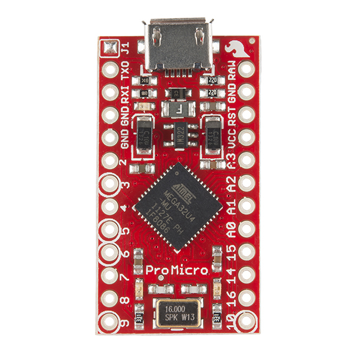
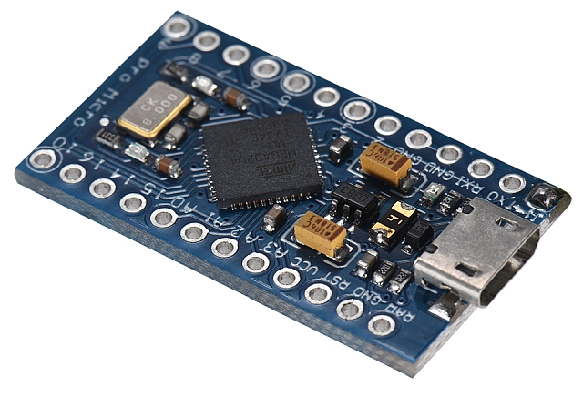
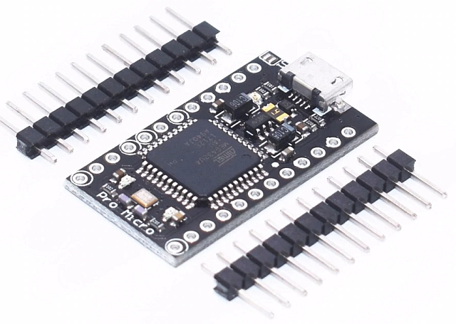
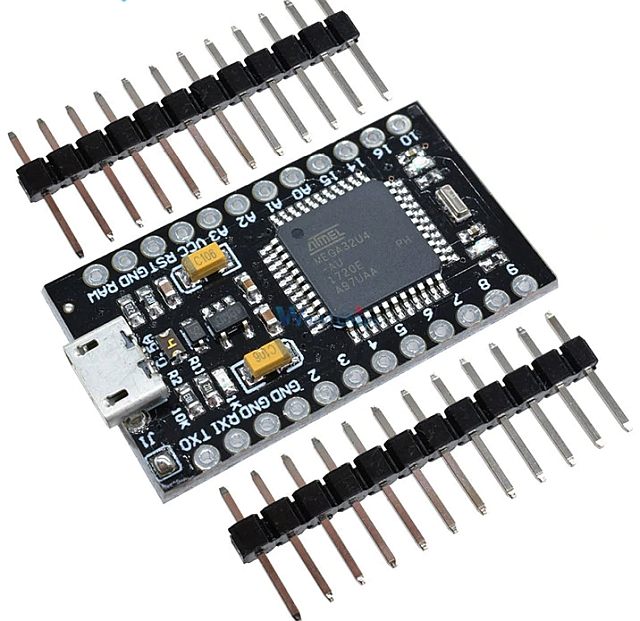
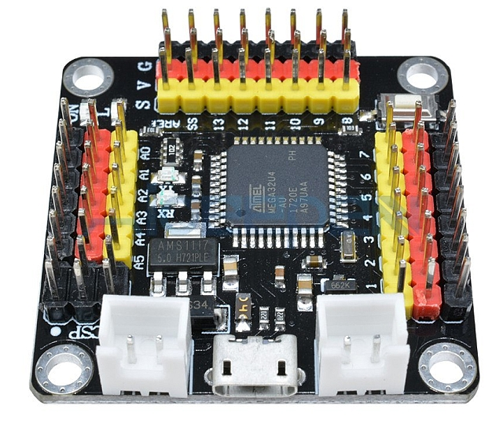
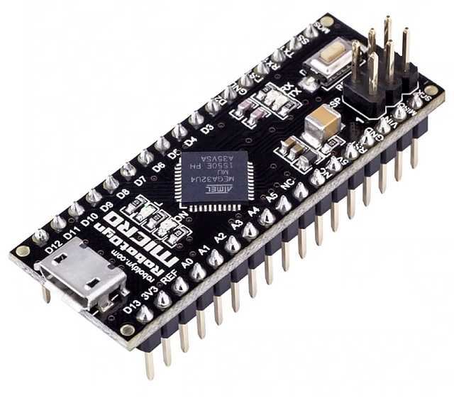
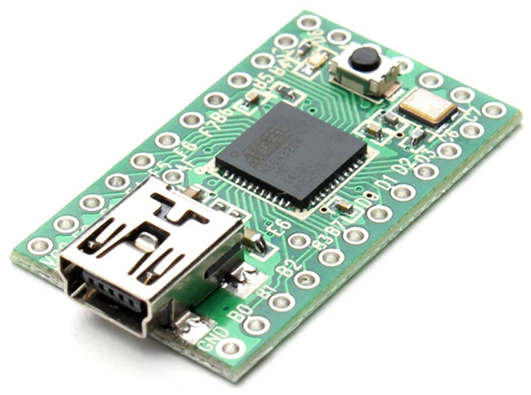

QMK
QMK (Quantum Mechanical Keyboard) — программное обеспечение (прошивка) с открытым исходным кодом для клавиатур. Обладает широким функционалом: гибкая работа с раскладками, слои, макросы, подсветка, работа с внешними устройствами — подключение координатных устройств PS/2, звуковые эффекты и т. п. QMK работает на распространённых микроконтроллерах с архитектурой Atmel AVR и некоторых ARM.
Является форком TMK, развивается гораздо быстрее благодаря поддержке сообщества.
QMK — не единственный проект с исходным кодом для клавиатур, но его популярность значительно выше, чем у родительского проекта TMK и альтернативных проектов типа EasyAVR, PS2AVR или Kiibohd.
Функционал
Подробное описание функционала QMK см. в оригинальной документации.
- Слои. Помимо традиционного переключения при удержании клавиши поддерживаются более интересные способы переключения слоёв. Например, сочетание на одной клавише переключения слоёв и обычного сканкода.
- Макросы. Макросы, конечно, могут быть и программными (Compose, AutoHotKey и т. п.), но аппаратные макросы работают независимо от ОС.
- Аудио. Ваша клавиатура может издавать звуки при включении, нажатии клавиш, переключении слоёв.
- Auto Shift. При нажатии клавиши удерживать её чуть дольше обычного, клавиатура отправляет нажатие с Shift.
- Подсветка. Простые светодиоды, RGB-линейки, индивидуальные RGB-светодиоды под каждой клавишей.
- Bootmagic. Динамическое изменение настроек клавиатуры при помощи определённых комбинаций (например, замена CapsLock и Control местами).
- Динамические макросы. Временные макросы можно создавать налету, без перепрошивки.
- ЖК-дисплей HD44780.
- Key Lock. Залипание клавиш-модификаторов.
- Раскладка. Физическая раскладка (layout, расположение клавиш на матрице) абстрагирована от логической раскладки (keymap, назначение сканкодов клавишам).
- Leader Key. Макрос можно повесить не просто на клавишу, а на определённое сочетание последовательно нажатых клавиш — аналогичный принцип используется в Compose.
- Tap Dance. Функция клавиши меняется в зависимости от количества последовательных нажатий.
- Управление мышью. Перемещение указателя с различным ускорением, кнопки, прокрутка.
- Внешние координатные устройства. Можно подключить трекпоинт или любое другое устройство с PS/2.
- Терминал. Отладочные команды через текстовый редактор.
Применение
QMK используется в мелкосерийных и полностью самосборных клавиатурах. Со списком поддерживаемых клавиатур можно ознакомиться в Git-репозитории.
QMK может работать не только в качестве контроллера, т. е. устройства, непосредственно управляющего клавиатурной матрицей, но и конвертера — устройства, подключаемого к готовой клавиатуре с интерфейсами ADB, XT или даже USB. Всё верно, существует конвертер USB-USB, позволяющий добавить функционал QMK к любой USB-клавиатуре.
Если вы планируете использовать QMK, то есть следующие варианты:
- Полностью самодельная клавиатура. Используйте поддерживаемый микроконтроллер.
- Готовая клавиатура либо комплект для сборки. Выбирайте из списка поддерживаемых клавиатур.
- Клавиатура с экзотическим интерфейсом (для которого нет конвертера) или с неисправным контроллером. Если клавиатура использует контактные переключатели, то можно подключить микроконтроллерную плату из списка поддерживаемых напрямую к матрице.
Поддерживаемые контроллеры
Основной архитектурой для QMK/TMK является AVR:
- ATmega32U4 (PJRC Teensy 2.0, Pro Micro).
- AT90USB1286 (PJRC Teensy++ 2.0)
- ATmega168P и ATmega328P поддерживаются, но из-за отсутствия аппаратного USB-стека требуют V-USB.
- ATmega32U2
Некоторое время назад была добавлена поддержка ARM-микроконтроллеров, совместимых с ChibiOS. Наиболее распространённые и проверенные: Blue Pill, Black Pill, Teensy LC, Teensy 3.2. Поддержка ARM/ChibiOS развивается медленно, работает не весь функционал: Bootmagic, звук и т. д.
Как настроить QMK
За подробностями стоит обратиться к оригинальной документации.
Обычно процесс прошивки клавиатуры состоит из трех шагов: подготовки и настройки файла раскладки под свои нужды и возможности клавиатуры или выбора готовой раскладки, компилирования прошивки под клавиатуру и, собственно, прошивки контроллера клавиатуры.
Для начала есть смысл воспользоваться Keyboard Layout Editor, чтобы облегчить подготовку раскладки перед прошивкой, или ознакомиться со свойствами готовых раскладок. Этот сайт позволяет очень хорошо визуализировать, как будет выглядеть раскладка на клавиатуре. Авторы раскладок часто снабжают свои варианты раскладок ссылками на этот сайт, где представлен их вариант.
Файл для прошивки можно создать двумя способами:
- Скомпилировать с использованием файла раскладки
keymap.c, который вы пишете с нуля или правите готовый под свои нужды. - Воспользоваться онлайн-редактором раскладки, который сам компилирует файлы прошивок на основе раскладки, созданной или импортированной пользователем.
У обоих способов есть свои плюсы и минусы. Онлайн-редактор не позволяет управлять довольно большим числом функций, он не поддерживает работу с макросами, не дает настраивать низкоуровневые параметры клавиатуры. Но очень прост и быстр в работе, достаточно раскидать нужные функции по кнопкам клавиатуры, и получить готовую прошивку. Создание кеймапов вручную открывает доступ ко всем возможностям, но требует хоть и небольшого, но уверенного понимания работы QMK.
Основная проблема для пользователей проекта в том, что онлайн редактор не работает с файлами keymap.c и не способен их экспортировать. Это заставляет пользователя проделывать двойную работу или сразу использовать ручное редактирование.
Установка тулчейна
Данное руководство написано для начинающих (прим.: желательно иметь базовые представления о командных оболочках, принципах работы микроконтроллеров и минимальные навыки программирования), так что весь процесс, от установки QMK, драйверов до компиляции и прошивки будет описан для Windows.
Для начала нужна POSIX-среда, в качестве которой удобнее всего использовать Msys2. Устанавливаем, запускаем и получаем своеобразную unix'оподобную среду с bash в качестве оболочки и Pacman в качестве менеджера пакетов. Исходники QMK размещены на Github, поэтому первым делом нужно будет установить клиент git:
pacman -S git
Затем качаем QMK:
git clone https://github.com/qmk/qmk_firmware
Переходим в каталог с QMK и запускаем скрипт, устанавливающий всё необходимое (компиляторы C для AVR и ARM, драйверы и т. д.):
cd qmk_firmware
./util/qmk_install.sh
Что и как редактировать?
Рассмотрим работу с прошивкой на примере простого макропада 9key, работающего на ATmega32U4 с матрицей 3×3.
В файле rules.mk определены некоторые константы для make:
MCU = atmega32u4— тип микроконтроллера.F_CPU = 16000000— частота работы в Гц. ATmega32U4 встречаются на 16 МГц и на 8.OPT_DEFS += -DBOOTLOADER_SIZE=4096— размер загрузчика. В данной клавиатуре используется плата Pro Micro с загрузчиком Caterina, который имеет размер 4096 байт.Build Options— в этой секции можно выключить ненужный функционал QMK, уменьшив размер прошивки и потребление памяти.
В config.h определены: конфигурация матрицы (в данном случае 3 ряда и 3 столбца), пины для строк и столбцов, подключение диодов (COL2ROW соответствует наиболее распространённому варианту с подключенеим диодов катодом в сторону строк), пин для подключения RGB-ленты WS1212. TAPPING_TERM 200 — значение таймаута для Tap Dance, функции, позволяющей назначить на одну клавишу несколько действий, зависящих от количества быстрых нажатий («тапов»).
Физическая раскладка
В файле 9key.h, в макросе LAYOUT, определяется физическая раскладка клавиатуры — соответствие матрицы и физического расположения клавиш. В данном случае они совпадают:
#define LAYOUT( \
k00, k01, k02, \
k10, k11, k12, \
k20, k21, k22 \
) \
{ \
{ k00, k01, k02 }, \
{ k10, k11, k12 }, \
{ k20, k21, k22 } \
}
Допустим, что мы строим похожий макропад, но с более сложным расположением клавиш: клавиша, подключённая в матрице к третьему столбцу третьей строки (k22) физически будет находится в левом верхнем углу, а средней клавиши в третьей строки не будет вообще. В этом случае матрица будет выглядеть вот так:
#define LAYOUT( \
k22, k01, k02, \
k10, k11, k12, \
k20, k00 \
) \
{ \
{ k00, k01, k02 }, \
{ k10, k11, k12 }, \
{ k20, KC_NO, k22 } \
}
Возможно, вы видели платы и монтажные пластины, поддерживающие несколько физических раскладок. Например, с возможностью установить левый Shift шириной 2,25U или вместо него поставить короткий левый Shift шириной 1,25U и дополнительную 1U-клавишу. Для таких случаев может быть определено несколько вариантов физической раскладки. Пример: плата GH60 Satan.
Логическая раскладка
В каталоге keymaps лежат логические раскладки. Обычно там располагается каталог default с раскладной по умолчанию и дополнительные каталоги, в каждом из которых может лежать свой make-файл и файл keymap.c, в котором определяется самое интересное: слои, соответствие выдаваемых клавиатурой сканкодов и физической раскладки, макросы, логика работы светодиодов и прочий функционал. Можно будет создать свой вариант раскладки (например, в каталоге username) и компилировать прошивку с этой раскладкой командой make 9key:username.
Посмотрим, что происходит в стандартном файле keymap.c клавиатуры 9key:
#include QMK_KEYBOARD_H
// Tap Dance Declarations
enum {
ENT_5 = 0,
ZERO_7
};
// Macro Declarations
enum {
DBL_0 = 0
};
Определены имена для макросов Tap Dance и обычных.
const uint16_t PROGMEM keymaps[][MATRIX_ROWS][MATRIX_COLS] = {
/* LAYER 0
* ,-----------------------.
* | 1 | 2 | 3 |
* |-------+-------+-------|
* | 4 | 5/ENT | 6 | Dbl Tap 5 for Enter
* |-------+-------+-------|
* | 7/0 | 8 | 9/FN | 7/0 = Dbl Tap 7 for 0 - 9/FN = Hold 9 for FN
* `-----------------------'
*/
[0] = LAYOUT( \
KC_1, KC_2, KC_3, \
KC_4, TD(ENT_5), KC_6, \
TD(ZERO_7), KC_8, LT(1, KC_9) \
),
/* LAYER 1
* ,-----------------------.
* | ESC | + | - |
* |-------+-------+-------|
* | BSPC | * | / |
* |-------+-------+-------|
* | 00 | . | |
* `-----------------------'
*/
[1] = LAYOUT( \
KC_ESC, KC_PLUS, KC_MINS, \
KC_BSPC, KC_ASTR, KC_SLSH, \
M(DBL_0), KC_DOT, KC_TRNS \
)
};
qk_tap_dance_action_t tap_dance_actions[] = {
[ENT_5] = ACTION_TAP_DANCE_DOUBLE(KC_5, KC_ENT),
[ZERO_7] = ACTION_TAP_DANCE_DOUBLE(KC_7, KC_0)
};
const macro_t *action_get_macro(keyrecord_t *record, uint8_t id, uint8_t opt) {
if (record->event.pressed) {
switch(id) {
case DBL_0:
SEND_STRING("00");
return false;
}
}
return MACRO_NONE;
};
void matrix_init_user(void) {
}
Определены логические раскладки для двух слоёв. В итоге получается некое подобие нампада. Так как клавиш у нас всего 9, то приходится применять смекалку:
- В слое «0» на клавише в центре висит первый макрос Tap Dance под именем ENT_5. Действие для него определено в
qk_tap_dance_action_t tap_dance_actions[]: клавиша выдаёт «5» при одиночном нажатии и Enter при двойном. - Аналогичным образом объединены «7» и «0» на левой нижней клавише.
- Переключение на первый слой совмещено с «9» функцией LT: клавиша выдаёт «9» при одиночном нажатии и переключает на слой «1» при удержании. Для переключения слоёв в QMK есть много разнообразных способов, ознакомиться с ними можно в документации.
- На слое «1» на левой нижней клавише назначен макрос
DBL_0. Действия для макросов перечислены вaction_get_macro. В данном случае макрос выдаёт два нуля. - На правой нижней клавише мы видим
KC_TRNS. Это специальный код для обозначения прозрачности. Подробное описание этой концепции можно посмотреть в документации.
Прошивка
Что может пойти не так
TMK
Проект TMK послужил основой для QMK. В настоящее время практически нет причин, по которым стоило бы использовать TMK вместо QMK. Исключение — некоторые конвертеры, не все из которых портированы в QMK.
Контроллеры
Atmega32U4
В настоящее время микроконтроллер Atmel Atmega32U4 является основной рабочей лошадкой в проектах самодельных и мелкосерийных клавиатур. Он хорошо задокументирован и хорошо изучен за несколько лет производства, имеет USB-стек и стоит недорого.
В небольших проектах удобно использовать готовые платы: упрощается проектирование печатной платы (не нужно размещать, а затем паять миниатюрные SMD-компоненты), возможен навесной монтаж, прошит загрузчик.
Pro Micro

Sparkfun Pro Micro. Оригинал производства Sparkfun. Особого смысла покупать его нет, стоит $16. Стоит заметить, что Sparkfun распространяет дизайн Pro Micro под свободной лицензией, так что упрекнуть китайцев в пиратстве тут нельзя. Доступно 18 пинов ввода-вывода. Ещё два (B0 и D5 в качестве выходов) можно получить, припаявшись к набортным светодиодам.

Синий Pro Micro — один из распространённых китайских клонов на плате синего цвета. Стоят они на Aliexpress начиная от $3 с небольшим. Встречаются разновидности на 5 В / 16 МГц и 3,3 В / 8 МГц (последний может понадобиться для конвертера usb_usb).

Чёрный Pro Micro. Совпадают по форм-фактору с синими, но используется Atmega32U4 в более крупном корпусе 44TQFP вместо 44QFN, что позволяет подключиться к ещё 5 пинам (итого: 18+2+5=25): B7, C7, D6, F0, F1.

«Толстый» чёрный Pro Micro. Можно узнать по жёлтым конденсаторам и логотипу Diymore на обратной стороне платы. Разъём micro-USB значительно прочнее — монтируется через отверстия в плате. Имеет ту же распиновку, что и обычные Pro Micro, но плата на 2,54 мм шире. Предпочтительный вариант для навесного монтажа, но вставить в плату, рассчитанную на обычный Pro Micro не получится.

Квадратный Pro Micro. Можно найти на Aliexpress под названием «Strong Pro Micro». Несколько разновидностей: 3,3/5 В и micro/mini-USB. Несколько дороже других китайских плат, но расположение пинов и наличие крепёжных отверстий может быть удобным для навесного монтажа. Доступно 20 пинов. Присутствует кнопка reset и крепление USB-разъёма через отверстия в плате.

RobotDyn Micro — просто Micro, без Pro. Плата длиннее и дороже, чем дешёвые Pro Micro, но доступно сразу 24 пина, и кнопка reset лишней не будет.
Teensy 2.0

Плата от PJRC с проприетарным загрузчиком HalfKay. Стоит недёшево — $16 за оригинал без учёта доставки и около $10 за китайский клон на Aliexpress, но имеет ряд преимуществ перед Pro Micro:
- 25 пинов ввода-вывода доступны без фокусов с припаиванием к ногам МК.
- Загрузчик HalfKay. Во-первых, он занимает всего 512 байт вместо 4096 (Caterina/DFU), лишнее место может пригодиться. Во-вторых, он не требует установки драйверов под Windows, и можно использовать предельно простой GUI — с справится человек, ничего не знающий о программировании МК.
- Кнопка reset на борту.